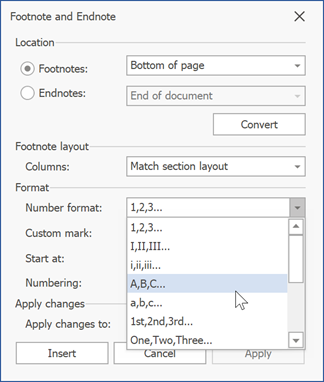
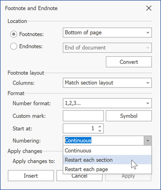

Change Note Appearance
Click the Footnotes dialog box launcher on the References tab or right-click a note and select Note Options.


This invokes the Footnote and Endnote dialog. Options in this dialog allow you to specify note location, layout, and format.

To specify what note options to change, click the Footnotes or Endnotes radio button in the dialog's Location section.
You can apply changes to the current section or to the whole document. Select the required options in the Apply changes to: drop-down list.

Change Note Location
Select the desired note location from the Location drop-down menu. You can place footnotes at the bottom of the page or below text. Endnotes can be located at the end of the document or at the end of each section.

Change Note Layout
Select the number of columns in the Columns: list.
This parameter is ignored. You can set this option and save its value to a file for further processing in Microsoft Word or other word processing applications.
Change Note Format
The Format section allows you to specify the following options:
Number Format - Specifies how to format numbers in footnote or endnote references. Select the desired format from the drop-down list.

- Custom Mark - Specifies the symbol used to mark a footnote or endnote reference. You can paste a symbol to the Custom mark field or click Symbol to select a symbol from the Symbol dialog. image
Start At - Specifies the start number for a footnote or endnote reference. Enter the number in the Start At field. If you set the Numbering option to Restart each section or Restart each page, the Start At option value is ignored.
Numbering - Specifies when reference numbering should be reset. If you set this option to Restart each section or Restart each page and then change the Start At option, the Numbering value is reset to Continuous.
